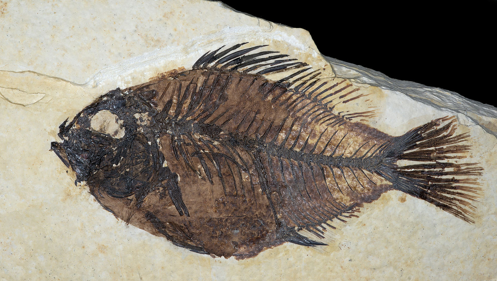
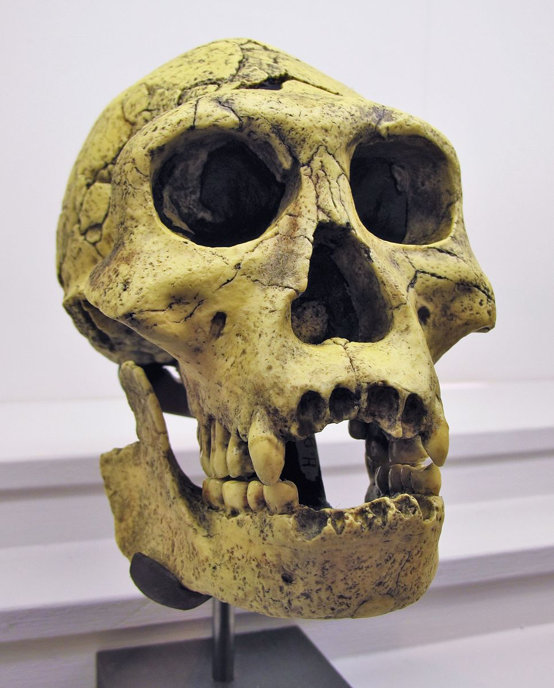

نظریهی تکامل
Evolution
مهدی دیبایی
شامل ۶ بخش اصلی
تکامل
تغییرات ژنتیکی همراه با تغییر نسل
در نتیجهی جهش ژنتیکی در DNA
تدریج
تغییرات بزرگ در بازههای زمانی بلند به وجود میآیند
صد هزار تا چند میلیون سال
گونه زایی
تقسیم گونهها به گونههای متفاوت
قابلیت تولید مثل با یکدیگر را ندارند
در زمان اتفاق خیلی ساده
عوامل جغرافییای، استراتژیک و ...
والد مشترک
بر اساس مقایسهی دنبالههای DNA
پیشبینیهای پاسخداده شده
انتخاب طبیعی
تفاوتهایی در بقا و قدرت تولید مثل
عالی نیست
محدودیتهای توسعه
دیگر فرایندها
رانش ژنتیکی
جهشهای جانبدارانه
تکامل فقط یک نظریس؟
دیکشنری آکسفورد:
گزارهای از قوانین کلی، اصلها و علل چیزی که دانستهمیشود یا مورد مشاهده قرار میگیرد.
آکادمی علمی ملی آمریکا:
توضیح اثباتشده ای که به طور مکرر تایید شده و برای اهداف کاربردی، به عنوان «حقیقت» مورد قبول است.
(«حقیقت» هیچوقت در علم پایانی نیست، چیزی که امروز به عنوان حقیقت مورد قبول است میتواند در آینده طرد شده یا تغییر یابد)
نظریه گرانش
نظریهی نسبیت
نظریه اتمها
پیشبینیهای نظریه تکامل
سندهایی برای تغییر و تکامل میان گونههای فسیلی
پیدا کردن فسیلهای موجودات سادهتر در لایههای قدیمی
پیدا کردن فسیل موجودات پیچیدهتر و شبیهتر به موجودات فعلی در لایههای جدید
نمونههای گونهزایی در میان فسیلها
نمونههای گونهزایی در زمان حال
پیدا کردن گونههای پیوندی میان گروهها و گونهها
پیدا کردن این گونهها در فسیلهای متناسب با زمان مورد پیشبینی
تنوع ژنتیکی تاثیر گذار روی مشخصات موجودات
عیبهای واضح و قابل توضیح در فرایند تکامل
انتخاب طبیعی در زمان حال
تشکیل فسیلها

شرایط خاص: ورود به آب، دفن شدن زیر رسوب
قسمتهای نرم معمولن از بین میروند
تعداد کل گونهها از ابتدا تا الآن: ۱۷ میلیون - ۴ بیلیون
تشخیص عمر فسیلها
همسانسازی لایههای رسوبی در سراسر دنیا
عناصر رادیواکتیو و زمان نیمهعمر در سنگهای آذرین
روشهای بیولوژیکی
گونهزایی در فسیلها
نقصهای طراحی
DNA شامل ژنهای مرده و غیرفعال اجداد
پرندههایی که پرواز نمیکنند
آپاندیس
استخوان پایانی ستون فقرات
موش کور
موجوداتی که باقیماندهی چشم دارند اما نمیبینند
جزایر اقیانوسی
پرندهها، حشرات، گیاهان
جای خزندگان، دوزیستان و پستانداران خالی
انتخاب مصنوعی

گیاهان پیوندی
گونههای حیوانی پیوندی
انتخاب طبیعی در آزمایشگاه
باکتریها به دلیل کوتاه بودن نسل
انتخاب طبیعی در زمان حال

نوکهای بزرگتر در نتیجهی قحطی در جزیره
رشد ۱۰ درصی در یک نسل
و ما انسانها
فرمهای میانی انسان و کَپیها (Apes)
باور غلط! ما از شامپانزه نیستیم!
Sahalenthropus tchadensis (7 MYA)
Australopithecus Afarensis (4-3 MYA)
Homo hibilis (2.5 MYA)
گونهای که بیشتر از ابزار استفاده میکرد
Homo erectus (1.8 MYA)

گونهی شناخته شده به عنوان نزدیکترین جد انسان خردمند
Neanderthals (400-250KYA)
Homo sapien (300,000YA)
ممنون!